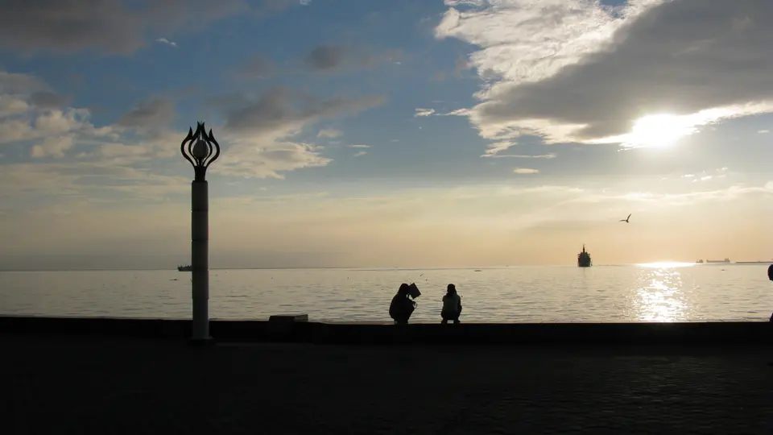
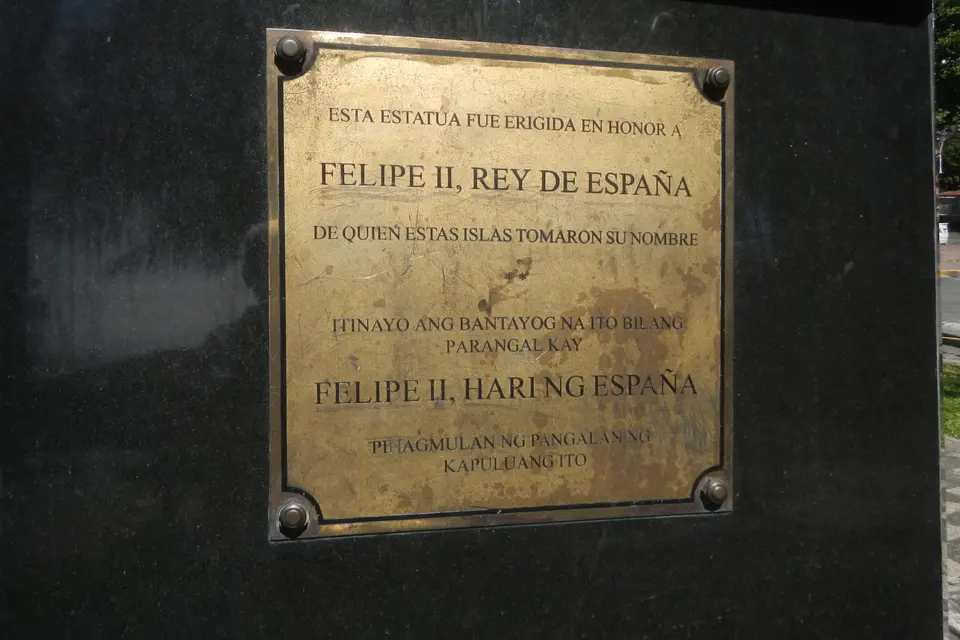

Manila: Pearl of the Orient
Where centuries-old stone walls along the Pasig River meet a vibrant coastal metropolis on Manila Bay.
A Harbour City Shaped by Five Centuries
Founded as a Spanish colonial capital in 1571 on the site of the pre-colonial settlement of Maynila, Manila sits on the eastern shore of Manila Bay where the Pasig River meets the sea. Its natural harbour made it the Pacific hub of the Manila–Acapulco galleon trade for more than two centuries.
Today, the City of Manila forms the historic core of Metro Manila (the National Capital Region). Covering roughly 42.9 square kilometres and home to around 1.85 million residents, it ranks among the most densely populated cities on Earth.
Walking through Manila is like turning the pages of a living archive: Spanish-era churches and ramparts in Intramuros stand minutes away from American-period neoclassical landmarks, bustling street markets in Quiapo, and the world's oldest Chinatown in Binondo.
| Feature | Detail |
|---|---|
| Country | Philippines |
| Region | National Capital Region (NCR) |
| Founded | 24 June 1571 |
| Area | 42.88 km² (approx. 42.9 km²) |
| Population | 1,846,513 (2020 census) |
| Languages | Filipino, English |
| Currency | Philippine peso (₱ / PHP) |
| Time zone | Philippine Standard Time (UTC+8) |
| Nickname | Pearl of the Orient |
Brief History of Manila
-
Pre-1571
Kingdom of Maynila
Before European arrival, Maynila was a fortified Tagalog settlement along the Pasig River led by Rajah Sulayman, trading actively with China, Borneo, and neighbouring islands.
-
1571 – 1815
Intramuros & the Galleon Trade
Spanish conquistador Miguel López de Legazpi declared Manila the colonial capital on 24 June 1571. The stone walled city of Intramuros became the anchor of the trans-Pacific galleon trade linking Asia, the Americas, and Europe.
-
1898 – 1946
American Period & Civic Design
Following the Spanish–American War, urban planner Daniel Burnham laid out wide boulevards, waterfront parks, and neoclassical civic buildings—many still standing around Rizal Park and Taft Avenue.
-
1945
Battle of Manila
During the liberation of the Philippines in World War II, fierce urban fighting devastated much of Intramuros and the historic districts, prompting decades of post-war rebuilding.
-
1946 – Present
Modern Capital & Cultural Heart
As the capital of an independent republic, Manila blends restored heritage landmarks, national museums, and universities with the fast-paced energy of Metro Manila.

Plan Your Journey Through Manila
Must-See Attractions
Tour Intramuros, Fort Santiago, UNESCO-listed San Agustin Church, Rizal Park, and Binondo, plus a short video of Manila Bay.
Culture & Food
Discover vibrant festivals, iconic jeepneys, classic Filipino dishes like adobo and halo-halo, and plan your visit.